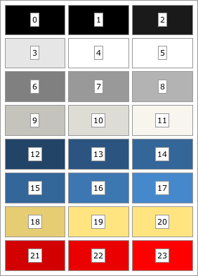

|
||||||||||
| PREV PACKAGE NEXT PACKAGE | FRAMES NO FRAMES | |||||||||
See:
Description
| Interface Summary | |
|---|---|
| TerraTreeViewSkin.NodeInfoVisitor | Node info visitor interface. |
| Class Summary | |
|---|---|
| FadeWindowTransition | Transition for fading a window, including the drop shadow. |
| TerraAccordionSkin | Accordion skin. |
| TerraActivityIndicatorSkin | Activity indicator skin. |
| TerraAlertSkin | Alert skin. |
| TerraBorderSkin | Terra border skin. |
| TerraBoxPaneSkin | Terra box pane skin. |
| TerraCalendarButtonSkin | Terra calendar button skin. |
| TerraCalendarSkin | Terra calendar skin. |
| TerraCheckboxSkin | Terra checkbox skin. |
| TerraColorChooserButtonSkin | Terra color chooser button skin. |
| TerraColorChooserSkin | Terra color chooser skin. |
| TerraDialogSkin | Dialog skin. |
| TerraExpanderSkin | Terra expander skin. |
| TerraFileBrowserSheetSkin | Terra file browser sheet skin. |
| TerraFileBrowserSkin | Terra file browser skin. |
| TerraFileBrowserSkin.DriveRenderer | Abstract base class for drive renderers. |
| TerraFileBrowserSkin.FileComparator | File comparator. |
| TerraFileBrowserSkin.FileRenderer | Abstract renderer for displaying file system contents. |
| TerraFileBrowserSkin.IncludeFileFilter | Include file filter. |
| TerraFileBrowserSkin.ListButtonDriveRenderer | List button drive renderer. |
| TerraFileBrowserSkin.ListButtonFileRenderer | List button file renderer. |
| TerraFileBrowserSkin.ListViewDriveRenderer | List view drive renderer. |
| TerraFileBrowserSkin.ListViewFileRenderer | List view file renderer. |
| TerraFileBrowserSkin.TableViewFileRenderer | Table view file renderer. |
| TerraFillPaneSkin | Terra fill pane skin. |
| TerraFormSkin | Terra form skin. |
| TerraFrameSkin | Frame skin. |
| TerraFrameSkin.FrameButton | Frame button. |
| TerraFrameSkin.FrameButtonSkin | Frame button skin. |
| TerraGridPaneSkin | Terra grid pane skin. |
| TerraLabelSkin | Terra label skin. |
| TerraLinkButtonSkin | Terra link button skin. |
| TerraListButtonSkin | Terra list button skin. |
| TerraListViewSkin | List view skin. |
| TerraMenuBarItemSkin | Terra menu bar item skin. |
| TerraMenuBarSkin | Menu bar skin. |
| TerraMenuButtonSkin | Terra menu button skin. |
| TerraMenuItemSkin | Terra menu item skin. |
| TerraMenuPopupSkin | Menu popup skin. |
| TerraMenuSkin | Menu skin. |
| TerraMeterSkin | Meter skin. |
| TerraPaletteSkin | Palette skin class. |
| TerraPanelSkin | Terra panel skin. |
| TerraPanoramaSkin | Panorama skin. |
| TerraPromptSkin | Prompt skin. |
| TerraPushButtonSkin | Terra push button skin. |
| TerraRadioButtonSkin | Terra radio button skin. |
| TerraRollupSkin | Terra rollup skin. |
| TerraScrollBarSkin | Scroll bar skin. |
| TerraScrollPaneCornerSkin | Scroll pane corner skin. |
| TerraScrollPaneSkin | Scroll pane skin that applies terra-specific colors. |
| TerraSeparatorSkin | Terra sheet skin. |
| TerraSheetSkin | Sheet skin class. |
| TerraSliderSkin | Terra slider skin. |
| TerraSpinnerSkin | Spinner skin. |
| TerraSplitPaneSkin | Split pane skin. |
| TerraSuggestionPopupSkin | Terra suggestion popup skin. |
| TerraTablePaneSkin | Terra table pane skin. |
| TerraTableViewHeaderSkin | Table view header skin. |
| TerraTableViewSkin | Table view skin. |
| TerraTabPaneSkin | Tab pane skin. |
| TerraTextAreaSkin | Terra text area skin. |
| TerraTextInputSkin | Text input skin. |
| TerraTextPaneSkin | Terra text area skin. |
| TerraTheme | Terra theme. |
| TerraTooltipSkin | Tooltip skin. |
| TerraTreeViewSkin | Tree view skin. |
| TerraTreeViewSkin.BranchInfo | An internal data structure that keeps track of skin-related metadata for a tree branch. |
| TerraTreeViewSkin.NodeInfo | An internal data structure that keeps track of skin-related metadata for a tree node. |
| Enum Summary | |
|---|---|
| TerraSheetSkin.SheetPlacement | |
Defines skin classes for the "Terra" theme.
Terra skins get their colors from the theme's color palette, which contains 24 indexed colors. Most Terra skins expose a setter methods for each color style that accepts an integer value; such methods allow callers to style the component by referencing the theme's color palette. The default palette is shown below:

The default color palette
The font, color palette, and message icons are defined in a JSON file that should contain a Map containing the following properties:
| Property: | Type: | Description: |
|---|---|---|
| font | String | The default theme font; must be understandable by java.awt.Font.decode(). |
| colorMultiplier | Number | The default multiplication delta (+/-) for generating the darker and lighter version of any "base color palette", in the range [0.0..1.0]. |
| colors | List<String> | This list should contain eight colors in a form understandable by java.awt.Color.decode(). This list represents the theme's "base color palette", from which the full color palette is derived. Each of these eight colors will be expanded to three colors in the final palette: a darker version, the color itself, and a lighter version. Thus, the final color palette will contain 24 colors. For instance, in the default color palette, the "base palette" colors are the colors in the middle column. |
| messageIcons | Map | Message icon names; must include values for "error", "warning", "question", and "info". Names are specified as resource named relative to the TerraTheme class. |
| smallMessageIcons | Map | Small message icon names; must include values for "error", "warning", "question", and "info". Names are specified as resource named relative to the TerraTheme class. |
By default, the theme definition in TerraTheme_default.json is used, but can be overridden via the org.apache.pivot.wtk.skin.terra.location property.
|
||||||||||
| PREV PACKAGE NEXT PACKAGE | FRAMES NO FRAMES | |||||||||